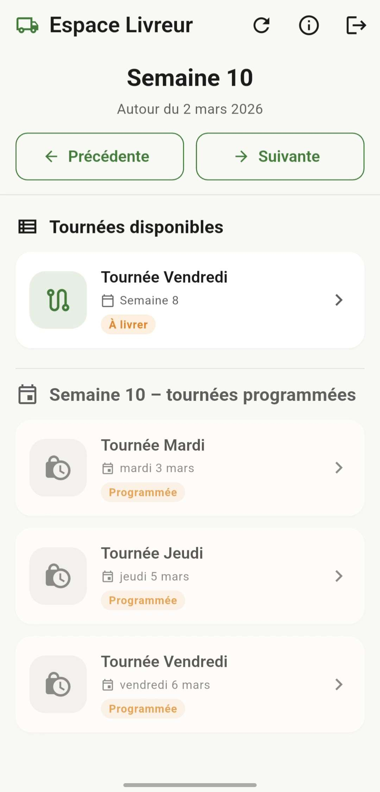
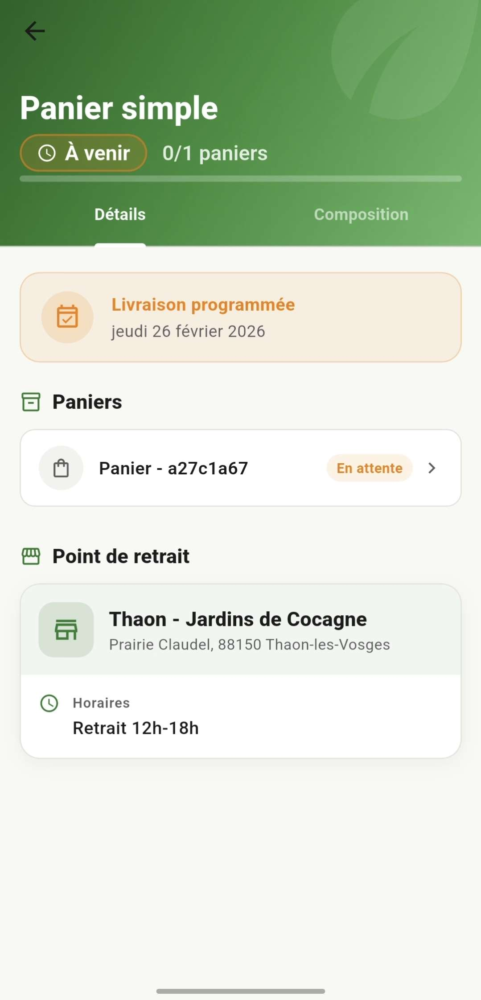
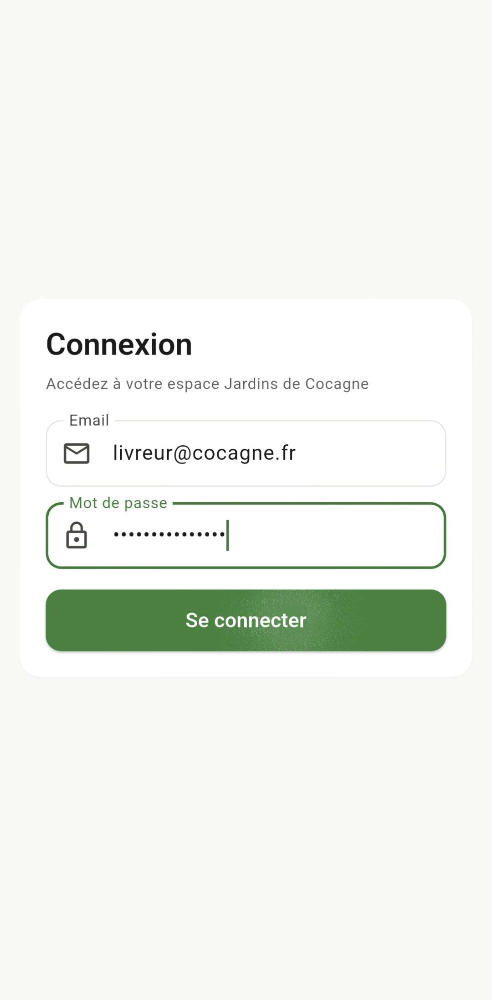
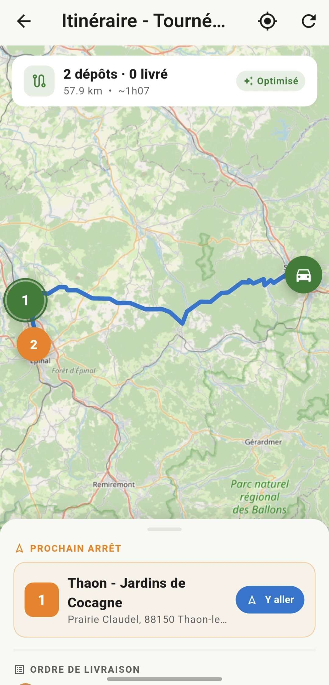

Jardins de Cocagne
Application mobile de gestion des livraisons de paniers biologiques
, une structure qui distribue des paniers biologiques en circuit court. Le projet couvre l'ensemble du cycle : conception, développement, mise en place du serveur et des notifications en temps réel.
Application Livreur
- Connexion sécurisée avec identifiants personnels
- Affichage des tournées du jour et récapitulatif des paniers
- Scan des codes QR des dépôts et de chaque panier
- Mise à jour instantanée du statut de livraison
- Carte interactive avec les points de dépôt colorés selon leur état
- Navigation vers le dépôt suivant via l'application de cartes native
Application Client
- Tableau de bord avec le statut de la prochaine livraison
- Historique complet des livraisons et détail des paniers
- Notification reçue dès que le panier est livré
- Fonctionne même quand l'application est fermée
- Consultation des notifications passées
Technologies côté application
Mobile
Technologies côté serveur
Serveur & base de données

Ce qui a été développé
- Écran de connexion avec vérification des champs
- Mot de passe chiffré côté serveur avant stockage
- Session stockée de façon sécurisée sur le téléphone
- Accès différent selon le profil : livreur, client ou administrateur
- Déconnexion propre avec suppression complète de la session
Technologies

Ce qui a été développé
- Marqueurs colorés selon l'état : gris (livré), vert (prochain), orange (à venir)
- Position du livreur récupérée en temps réel
- Tracé du chemin optimisé sur la carte
- Bouton de navigation vers le dépôt suivant via l'application de cartes du téléphone
- Centrage automatique sur le prochain point de livraison
Technologies
Ce qui a été développé
- Scan du code QR du dépôt à l'arrivée via la caméra
- Scan individuel de chaque panier pour confirmer la livraison
- Protection contre les doubles scans accidentels
- Mise à jour immédiate du statut sur le serveur
- Passage automatique au dépôt suivant après validation
Technologies
Le client reçoit une notification sur son téléphone dès que le livreur valide son panier. Cela fonctionne même si l'application est fermée ou en arrière-plan.
Ce qui a été développé
- Enregistrement du téléphone au démarrage pour recevoir les notifications
- Mise à jour automatique si le téléphone change d'identifiant
- Réception des notifications même avec l'application fermée
- Envoi déclenché automatiquement depuis le serveur après validation
- Nettoyage des appareils désenregistrés
Technologies
Le serveur gère toutes les communications entre l'application et la base de données. Chaque action (connexion, scan, consultation) passe par des routes sécurisées selon le profil de l'utilisateur.
Fonctionnalités
- Connexion et identification de l'utilisateur
- Récupération des tournées du jour pour le livreur
- Validation des scans de dépôts et de paniers
- Tableau de bord et historique côté client
- Enregistrement et gestion des notifications
Technologies
La base de données stocke l'ensemble des informations du projet : utilisateurs, tournées, dépôts, paniers, scans et notifications. Elle a été conçue pour refléter fidèlement le fonctionnement réel des Jardins de Cocagne.
Données gérées
- Comptes utilisateurs et organisations
- Tournées, dépôts et points de livraison
- Paniers, abonnements et livraisons
- Historique des scans et statuts
- Appareils enregistrés pour les notifications
Technologies